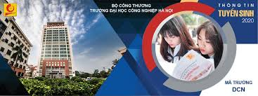

Sinh ra và lớn lên ở vùng quê thuần nông thôn Thọ Đa , xã Kim Nỗ , huyện Đông Anh ( Hà Nôi ) , Nguyễn Thị Trà ( sinh năm 1998) luôn chăm chỉ học tập và 12 năm liên là học sinh giỏi . Những năm tháng còn là học sinh , Trà ấp ủ ước mơ thi vào một trường đại học chuyên ngành cơ khí. Giờ đây , khi ước mơ đã thành hiện thực , Trà đã nhớ lại : " Khi chọn trường đại học để làm hồ sơ dự thi , em được người thân giới thiệu về Trường địa học Công Nghiệp Hà Nội . Em rất hào hứng và mong ước được học ở ngôi trường này , vì nghe nói môi trường học tập và rèn luyện về cờ khi , chế tạo ở đây có chuyên môn cao . Tuy nhiên , điều băn khoăn lớn nhất của em là ở đây hầu hết là các bạn nam".
Năm 2016, Trà thi đỗ vào Trường đại học Công nghiệp Hà Nội , Khoa Cơ khí , ngành học cơ khí chế tạo máy . Đúng như lo lắng của em , cả lớp có 70 sinh viên thì mỗi mình em là con gái . Sau này tìm hiểu thêm , Trà mới biết , thậm chí cả khóa học năm ấy , cũng chỉ có mỗi em là con gái làm hồ sơ đăng ký dự thi vào trường . Tuy nhiên , không vì thế mà em bị phân tâm , em nhanh chóng quen trường , lớp và bị cuốn hút bởi nề nếp học tập nghiêm túc của các bạn và các bài giảng chuyên sâu của giảng viên . Đó cũng là lý do đưa em đến với nghiên cứu kho học . Ngay trong năm học đầu tiên, Trà bắt đầu tham gia nghiên cứu khoa học với đề tài: "Nghiên cứu , tính toán và thiết kế máy đánh bóng kim loại". Hằng nỗ lực của bản thân và các bạn trong nhóm nghiên cứu , đề tài đã đoạt giải khuyến khích của trường . Trà cũng nhiệt tình tham gia hoạt động đoàn từ năm học đầu tiên. Là thành viên nữ duy nhất của lớp hamm mê nghiên cứu khoa học . Trà luôn được thầy Bí thư Đoàn của khoa hướng dẫn , giúp đỡ tận tình.
Bản quyền thuộc về khoa CNTT